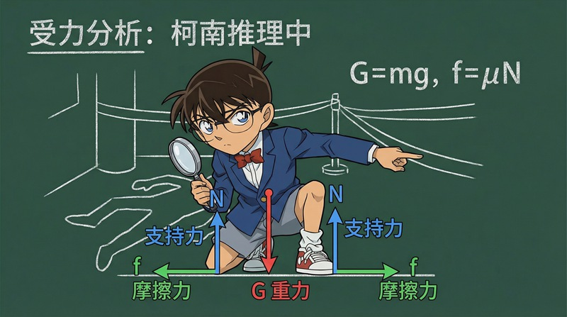

返回课程列表
第二课
静力学基础
立体机动装置与柯南装备的受力分析
⏱️ 约45分钟
科幻与动漫中有很多精妙的力学装备设计。柯南的动力滑板和足球也涉及精妙的力学设计。
三体太空战舰的力学
《三体》章北海传中，太空战舰在无重力环境下的加速、减速和变轨都需要精确的力学计算。无工质推进和传统化学推进的力学差异是核心剧情。
太空战舰的受力分析
太空航行的力学原理：
- 无工质推进：章北海关注的核心技术，推力不依赖喷射物质，颠覆火箭方程
- 恒星级战舰加速：以1g加速度持续加速，一年后可接近光速
- 太空变轨：利用引力弹弓效应改变航向，节省燃料消耗
- 黑暗森林威慑：三体舰队的减速段暴露位置，涉及速度与距离的运动学计算
- 《端脑》：虚拟世界中的物理引擎模拟真实受力，角色需要利用力学知识解谜逃生
柯南装备的力学分析
柯南的涡轮滑板、增强踢力鞋和弹射腰带都是力学装置。虽然是虚构的，但其原理可以用真实的力学来分析。

柯南装备的力学原理
少年侦探的力学装备：
- 涡轮滑板：太阳能驱动，最高时速可能超过100km/h，需要极大的摩擦力维持稳定
- 增强踢力鞋：电磁增强腿部力量，将足球加速到子弹速度需要数万牛顿的力
- 弹射腰带：弹性势能转化为动能，弹射足球的初速度可达200km/h
- 麻醉手表：微型弹簧发射麻醉针，需要精确的弹道计算